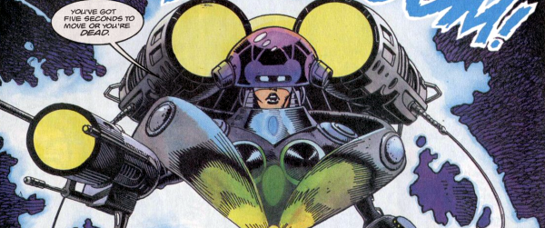

A weird, eco-warrior, wish-fulfilment fantasy in which a heavily-armed, time-traveling future human takes a leaf out of Finn's playbook and tries to save the planet by murdering corporate CEOs in cruel and inventive ways. For no credible reason, she requires some random civilians to be forced to help her: so this is like Scooby Doo meets Captain Planet.
Art by Cliff Robinson & Dondie Cox
| Story Title | Parts | Pages | w indicates a wraparound coverCovers | Year(s) | Issues | Writer | Artist | Colourist | Letterer |
|---|---|---|---|---|---|---|---|---|---|
| Mother Earth | 6 | 36 | 0 | 1993-1994 | 867-872 | Bernie Jaye | Cliff Robinson | Paul Neary: 1 Dondie Cox: 2‑6 various | Ellie de Ville |
| year | episodes | pages |
| 1983 | 0 | 0 |
| 1984 | 0 | 0 |
| 1985 | 0 | 0 |
| 1986 | 0 | 0 |
| 1987 | 0 | 0 |
| 1988 | 0 | 0 |
| 1989 | 0 | 0 |
| 1990 | 0 | 0 |
| 1991 | 0 | 0 |
| 1992 | 0 | 0 |
| 1993 | 1 | 6 |
| 1994 | 5 | 30 |
| 1995 | 0 | 0 |
| 1996 | 0 | 0 |
| 1997 | 0 | 0 |
| 1998 | 0 | 0 |
| 1999 | 0 | 0 |
| 2000 | 0 | 0 |
| 2001 | 0 | 0 |
| 2002 | 0 | 0 |
| 2003 | 0 | 0 |
| 2004 | 0 | 0 |